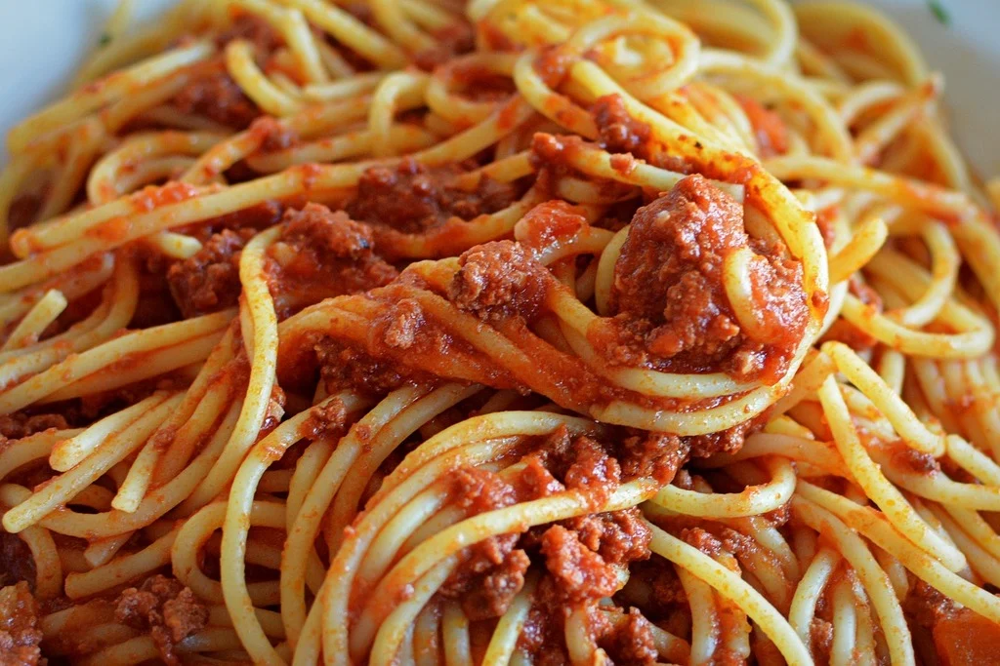

Spaghetti

Description
His palms are sweaty, knees weak, arms are heavy. There's vomit on his shirt already mom's
spaghetti
Ingredients
- 1/2 pound italian sausage
>
- 6.5 ounce tomato sauce
- 14.5 ounce diced tomato
- 2 bay leaves
- 1 teaspoon italian seasoning
- 1/2 teaspoon garlic powder
- 1 teaspoon dired basil
- 1 teaspoon dried oregano
- salt and pepper to taste
- 8 ounce spaghetti
Directions
- Cook and stir sausage in a large skillet over medium heat until browned. Drain.
- Add tomato sauce, diced tomatoes, bay leaves, Italian seasoning, garlic powder, basil, oregano, salt, pepper
to Italian sausage in the skillet. Simmer sauce over medium-low heat for at least 1 hour; it is best if
simmered all day.
- Meanwhile, bring a large pot of lightly salted water to a boil. Cook spaghetti in boiling water until tender
yet firm to the bite, 8 to 10 minutes. Drain and transfer to a large serving bowl.
- Add pasta to simmering sauce; toss until evenly coated.
Back to Homepage